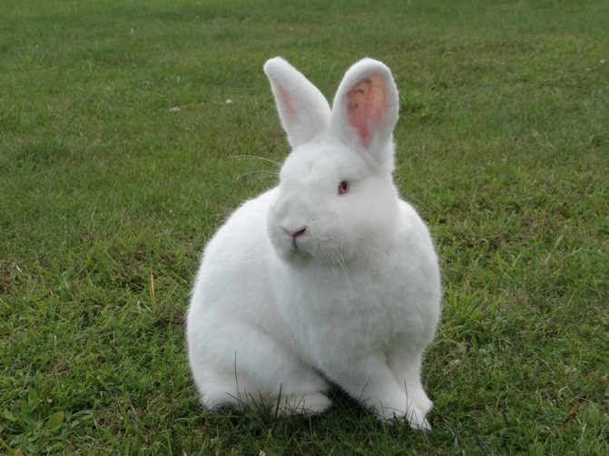
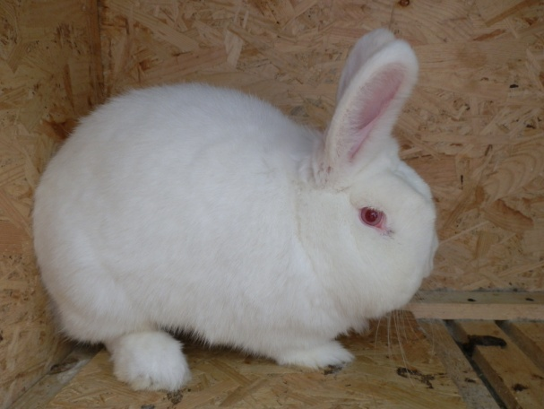
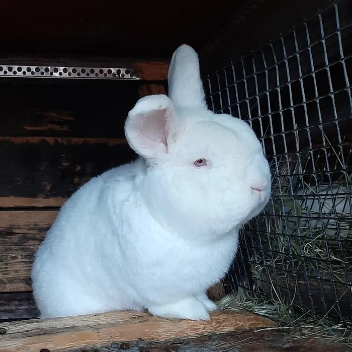
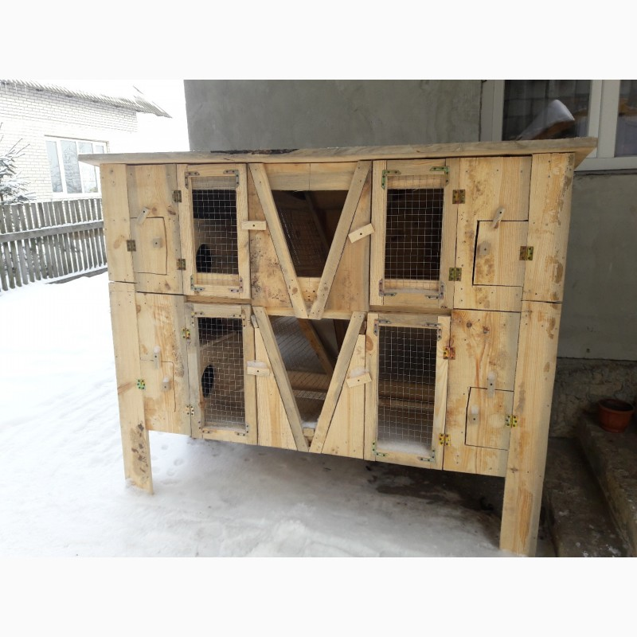
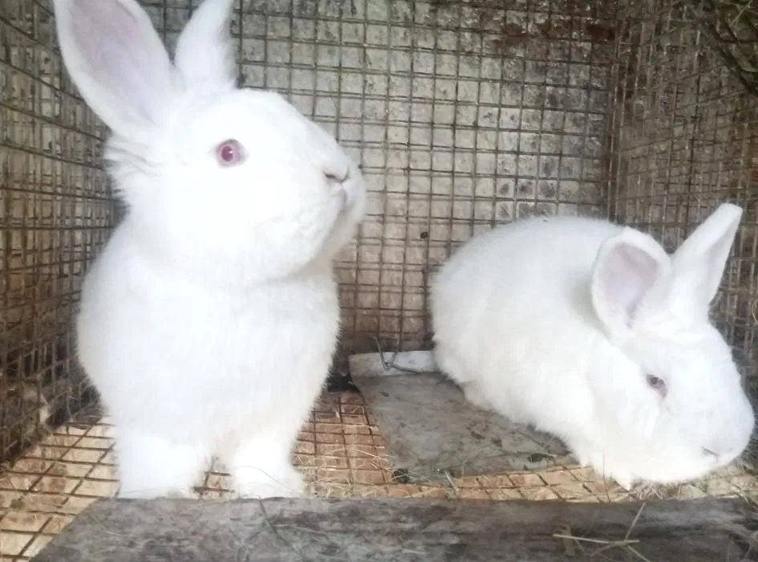

◈
Тулуб
Короткий, циліндричний, компактний. Довжина самця — 47 см, самиці — 49,5 см. Ребра округлі, спина пряма та широка, попереково-крижова частина добре розвинена.
Порода м'ясного напряму
Повний гід: від походження і стандарту до годування, розведення та ветеринарії
Почати читати
Попри назву, Новозеландська біла порода не має жодного стосунку до Нової Зеландії. Її виведено в американському штаті Каліфорнія, а офіційну реєстрацію вона отримала у 1916 році.
Спочатку роботу вели зі схрещування Фламандського велетня, Бельгійського зайця і Сріблястих кроликів — так отримали червоних новозеландців. З альбіносів, що з'являлися в окролах цієї лінії, окремими добірками вивели білу варіацію породи.
Ймовірно, для закріплення білого окрасу й поліпшення хутрового покриву до роботи залучали Ангорських кроликів та шиншил. У результаті наприкінці 1960-х сформувалися три офіційно визнані різновиди: білий, червоний і чорний. Найпоширенішим і найпродуктивнішим залишається білий.
До Європи порода потрапила у 1970 році й швидко поширилась на промисловому кролівничому ринку завдяки виняткової скоростиглості й рекордному виходу м'яса.

Короткий, циліндричний, компактний. Довжина самця — 47 см, самиці — 49,5 см. Ребра округлі, спина пряма та широка, попереково-крижова частина добре розвинена.
Голова середня, пропорційна. Вуха симетричні, довжиною 10–12 см, вкриті шерстю, кінчики заокруглені. У самців характерні пухкі щоки. Шия коротка — чим коротша, тим кращий м'ясний тип.
Очі яскраво-рожеві або червоні — характерна ознака альбінізму. Шкіра рожева. Будь-яке відхилення від білого кольору шерсті вважається вадою стандарту.
М'яка, гладка, оксамитова, сніжно-біла. Підшерсток злегка сріблястий. Довжина ворсу 3–3,5 см. Шкурка цінна, хоча поступається хутровим породам.
Міцні, прямі, з добре розвиненими м'язами. Задні ноги сильні й великі — це забезпечує характерний «м'ясний» профіль тулуба при вигляді збоку.
Міцна, кістяк добре розвинений. Грудна клітка глибока й широка. Відмінна м'ясність у поєднанні з компактним форматом — основні вимоги породного стандарту.

НЗБ — одна з найкращих промислових порід за співвідношенням витрат корму до приросту маси. Вихід м'яса з тушки досягає 60%, що є рекордним показником серед м'ясних кроликів.
| Вік | Жива маса |
|---|---|
| Новонароджений | 60–70 г |
| 1 місяць | 500–700 г |
| 2 місяці | 1,6–1,9 кг |
| 3 місяці | 2,4–2,7 кг |
| 4 місяці | 3,0–3,4 кг |
| Дорослий самець | 4,5 кг |
| Доросла самиця | до 5 кг |
Після 3 місяців темп росту сповільнюється — саме тому оптимальний вік забою для товарного виробництва становить 70–90 діб.

Порода добре адаптована до утримання в клітках на сітчастій підлозі в промислових крільчатниках. Розмір клітки для самиці з приплодом — не менше 80×60×45 см. Важливо: вуха та лапи чутливі до морозу і сируваті, тому підлогу слід тримати суху.
Оптимальна температура в крільчатнику — +12…+18°C. Порода вимоглива до мікроклімату при промисловому утриманні — потребує вентиляції без протягів, вологість повітря не вище 60–70%.
Для нормального відтворення і росту молодняку тривалість світлового дня — 16–18 годин. У темний сезон застосовують штучне досвітлення.
Клітки чистять не рідше 1 разу на 3 дні. Годівниці і напувалки дезінфікують щотижня. Після кожного відсаджування молодняку клітку обпалюють паяльною лампою або обробляють дезрозчином. Купати кроликів не рекомендується — тварина повинна повністю висохнути в теплому приміщенні.
НЗБ потребує збалансованого раціону. Дорослий кролик може споживати корм понад 70 разів на добу невеликими порціями — це особливість виду, яка забезпечує ефективне засвоєння поживних речовин. У клітках рекомендовано тримати бункерні годівниці й сіновали.
Основа раціону цілий рік. Має бути завжди в доступності. Добова норма дорослого — 150–200 г. Сіно забезпечує клітковину для нормальної перистальтики.
Зернобобові (овес, ячмінь, кукурудза, горох) складають основу концентрованої частини раціону. Добова норма — 60–120 г залежно від статі, віку та фізіологічного стану. Для відгодівлі ефективні гранульовані комбікорми.
Морква, кормовий буряк, гарбуз, топінамбур. Влітку — свіжа трава: пирій, кропива, деревій, люцерна, конюшина. Добова норма соковитих — 100–300 г. Зелень вводять поступово, щоб уникнути здуття.
Гілки яблуні, груші, акації, верби, берези задовольняють потребу в клітковині й стачують зуби. Вводять у раціон у будь-яку пору року. Уникати гілок черешні, персика та хвойних порід.
Кухонна сіль — 0,5–1 г/добу, крейда або кісткове борошно — джерело кальцію й фосфору. При гранульованому комбікормі більшість потреб покривається в складі гранул.
Чиста вода має бути доступна цілодобово. Влітку — не рідше 2 разів на день, зимою — теплою. Ніпельні напувалки — найкраще рішення для мінімізації забруднення.
Самиці досягають статевої зрілості у 5–6 місяців, самці — у 6–7 місяців. Для покриття самицю підсаджують до самця — не навпаки, щоб не спровокувати агресію в чужій клітці. Якщо самиця виявляє агресію вдруге — злучка пройшла успішно.
Кролиці не мають чіткого циклу тічки як у більшості тварин. Овуляція індукована — вона відбувається після злучки приблизно через 10–12 годин. Це спрощує планування окролів.
Тривалість сукрільності — 28–35 днів (найчастіше 31–32 дні). Вагітність зазвичай проходить без ускладнень. За 3–4 дні до окролу самиця починає будувати гніздо, заповнюючи гніздову скриньку пухом.
В окролі зазвичай 8–12 кроленят. У перші 2 тижні кроленята сліпі, глухі та голі — повністю залежать від матері. Очі відкриваються на 10–14 день. Підгодівлю твердим кормом починають з 16–18 дня.
До 2,5 місяців — 4 рази на добу. Потім поступово переводять на 3-разове й дворазове харчування. У разі загибелі самиці або відмови від годування малюків виходжують штучно: козяче молоко або розбавлене коров'яче молоко з несолодкою згущеним молоком по 1 мл 5 разів/добу (1-й тиждень), 2 мл × 3 (2-й тиждень).
Кроленят відсаджують від матері у 30–45 днів. Тривале підсисання (понад 45 діб) зменшує кількість окролів на рік. НЗБ може давати до 5–6 окролів на рік при інтенсивному режимі.
Для розведення купують кроликів неспоріднених ліній — бажано у великих господарствах, де утримують кількох кролів-виробників. Обирають активних тварин без зовнішніх дефектів: шкурка чиста, лапи і хвіст без пошкоджень, тварина охоче їсть.
Самця використовують як виробника не частіше 2–3 разів на тиждень. Навантаження на самця: 8–10 самиць. Виробників замінюють кожні 1,5–2 роки.

НЗБ — порода з хорошим здоров'ям, але потребує систематичної профілактики. Ключові захворювання кроликів поділяють на інфекційні, паразитарні та незаразні.